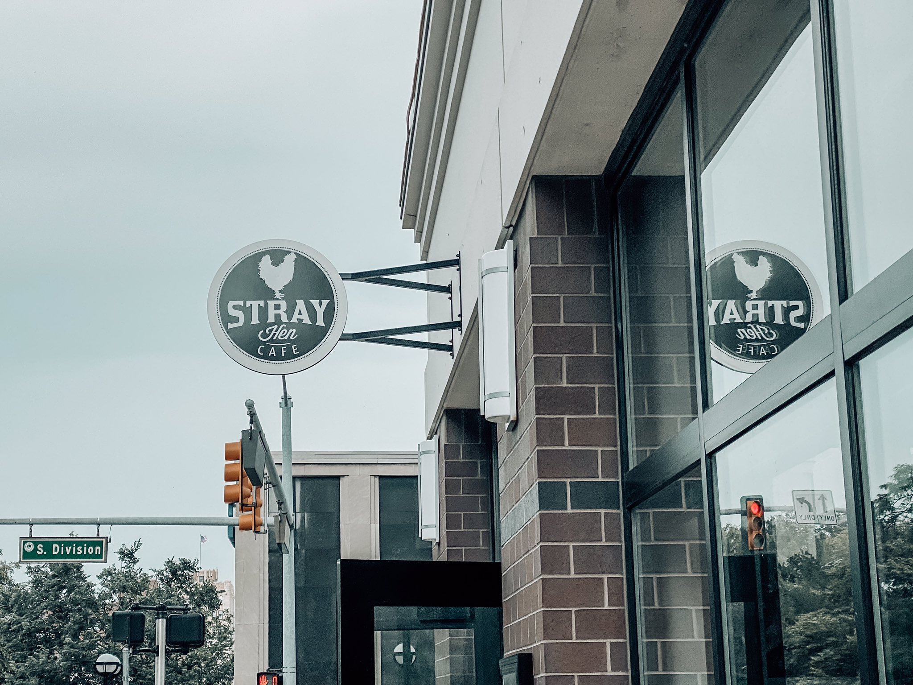
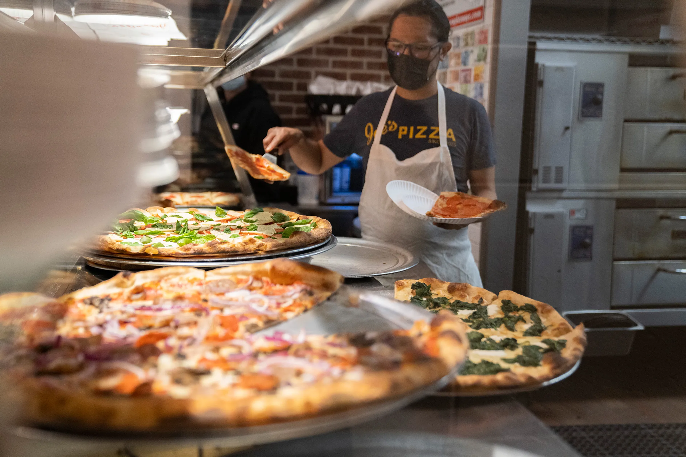
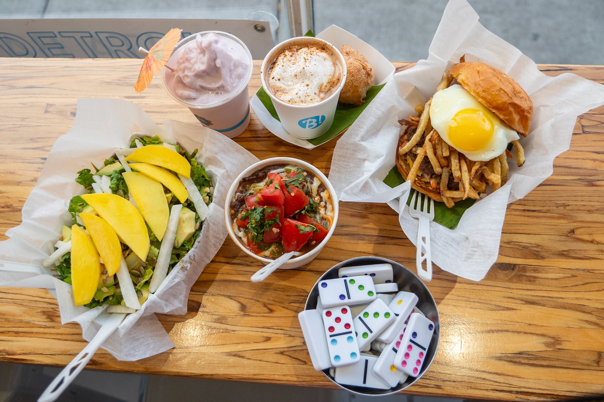
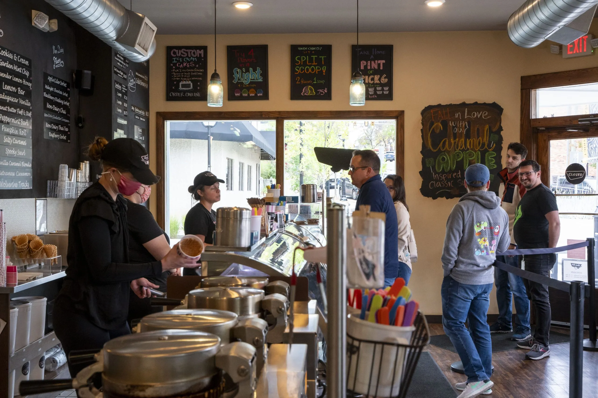
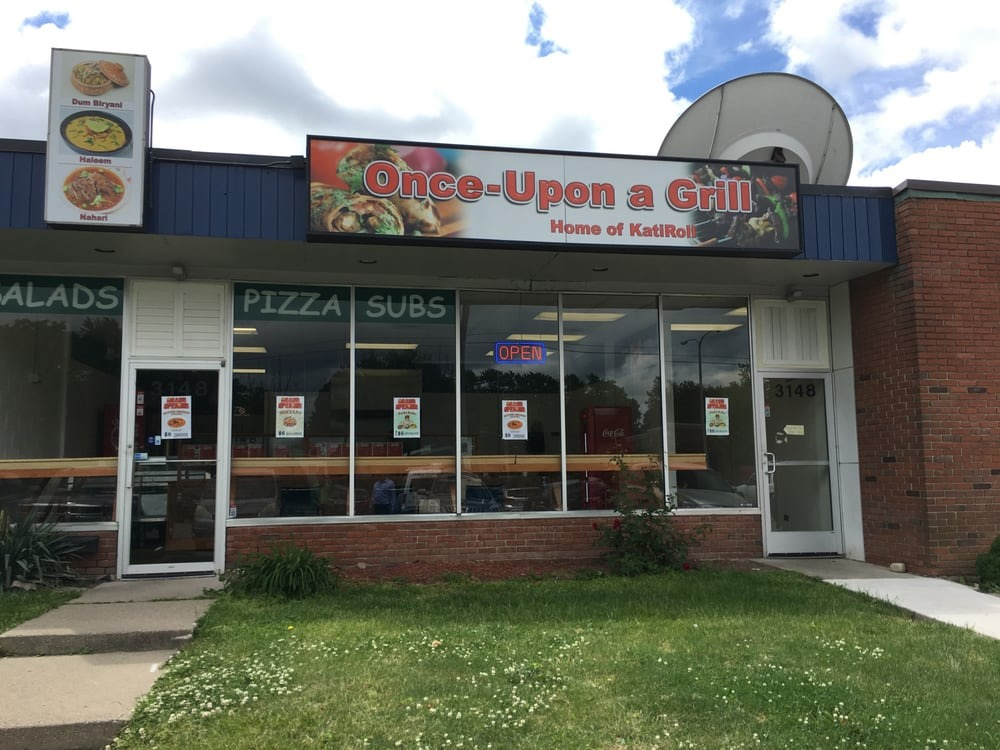

My Top Food Spots in Ann Arbor
Ann Arbor is a foodie's paradise! From the best brunch spots to the most authentic international cuisine, this city has it all. Whether you're a student, a local, or a visitor, you'll find something to satisfy your cravings. Here are my top picks for the best food spots in Ann Arbor.
Best Brunch: Stray Hen Cafe
Discover Ann Arbor's culinary oasis at Stray Hen Cafe, where the morning's first light ushers in an array of sumptuous brunch selections. It's a recent jewel in the city's dining crown, offering a refuge just steps away from the bustling University of Michigan campus. Within its cozy confines, you'll find a treasure trove of breakfast and lunch classics, each with a twist that's as inviting as the cafe's ambiance. Don't miss their signature chicken and waffles or the hearty breakfast burrito, each a testament to the cafe's commitment to flavor and community.
Best Pizza: Joe's
Step into Joe's Pizza, where the art of pizza-making meets the heart of Ann Arbor's downtown vibe. This eatery transcends the ordinary, creating an enclave where each pizza slice is a masterpiece of taste, crafted from the freshest ingredients with a dedication that's palpable. Joe's isn't just a place to eat; it's a destination where each visit becomes a memory, offering a slice of culinary bliss to everyone who walks through its doors. Experience the difference that care and quality can make, from the first bite to the last.
Top Choice By Students: Frita Batidos
Frita Batidos is where vibrant flavors and spirited gatherings converge, offering a slice of Cuban street cuisine right in the heart of Ann Arbor. Renowned for its lively atmosphere, this spot is a magnet for students and food lovers alike, drawn by the allure of its signature fritas and batidos. Each dish is a celebration of bold, international flavors, crafted to transport your senses to the streets of Havana. Dive into the coconut batido or savor the spiciness of the chorizo frita, and you'll understand why this place is a local legend.
Best Sushi: Totoro

Nestled in a quaint corner of Ann Arbor, Totoro is a sanctuary for sushi enthusiasts seeking both tradition and innovation. This intimate dining spot offers an escape into a world of exquisite sushi creations, where each roll is a labor of love, meticulously prepared for discerning palates. The Totoro roll, a house specialty, encapsulates the essence of this culinary haven — a place where simplicity meets sophistication. It's more than just dining; it's an experience that celebrates the delicate art of sushi making.
Best Ice Cream: Blank Slate Creamery
Blank Slate Creamery is where craftsmanship and creativity merge to produce extraordinary ice cream experiences. This beloved spot is more than just an ice cream shop; it's a community treasure that prides itself on using locally sourced ingredients to create flavors that are as unique as they are delightful. Whether you're indulging in the floral notes of lavender honey or the rich complexity of brown butter almond brittle, each scoop is a journey to the heart of Ann Arbor's sweetest delights.
Hidden Gems: Once Upon A Grill
Don't let the modest facade of Once Upon A Grill deceive you; it's Ann Arbor's treasure trove of Pakistani cuisine. This unassuming eatery stands as a beacon for those in pursuit of the authentic flavors and rich diversity that Pakistani cuisine has to offer, far surpassing the usual fare found in Western interpretations of subcontinental cuisine. The Kati Rolls are just the beginning – what truly captivates is the owner's knack for kindling engaging conversations, making every visit as memorable for the companionship as it is for the culinary delights.